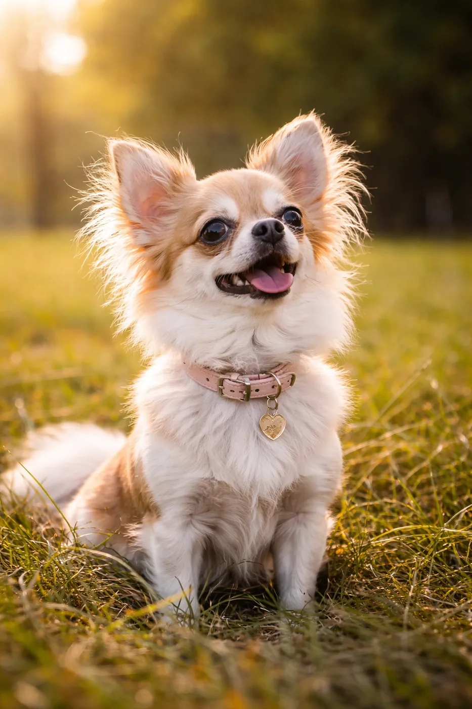

Zur Startseite
Trainingsangebot
Tierschutzhunde
Manche Hunde erkunden ihr neues Zuhause sofort. Andere beobachten erst einmal von einem geschützten Platz aus. Das Training richtet sich nach dem Hund, der heute vor dir steht.
Trainingsnotiz vorbereiten
Zeit zum Ankommen
Vertraute Wege und wiederkehrende Abläufe können neue Situationen überschaubar machen. Im Training beobachten wir, wann dein Hund ansprechbar bleibt und wann er mehr Abstand braucht.
Einen Rückzugsort schaffen
Richte einen ruhigen Platz ein, den dein Hund selbst aufsuchen und ungestört wieder verlassen kann.
Abstand passend wählen
Beobachtet eine Begegnung zunächst aus der Entfernung. Könnt ihr entspannt weitergehen, habt ihr einen guten Ausgangspunkt.
Kleine Fortschritte wahrnehmen
Schreibe nach der Runde auf, wann dein Hund von sich aus Blickkontakt gesucht oder neugierig geschnüffelt hat.